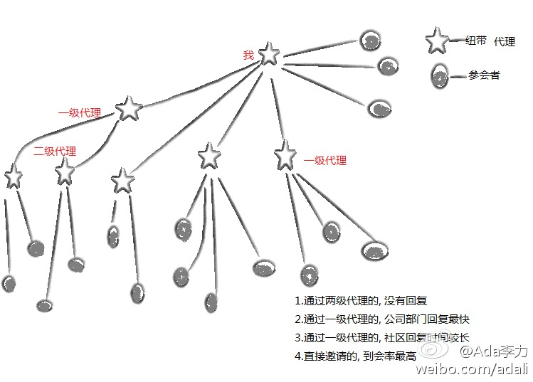
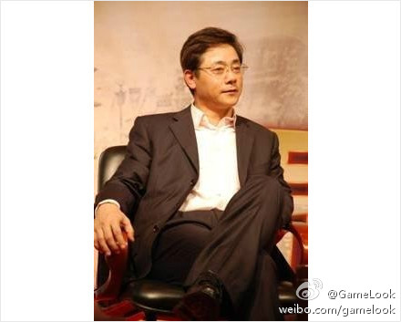

最近有次会议收费, 会议主办方给我了些门票, 于是我当了次票贩子, 陆续发出去60张. 这个过程很有意思. 如果把参会者比成用户, 那么到用户经过的节点越多, 信息的传递和反馈就越无效. 怎么降低这个节点的层数, 或者怎么让节点更顺畅, 是个大命题. 当了回票贩子 ? Ada Li's Blog 网页链接 
公司举办的活动, 有种目标是让参会者感觉到尊重和尊贵, 因此在会务上非常精细, 从场地, 到流程, 到餐饮. 这种方式成本高; 而对于开发者来说, 他们更关注的是内容, 是能从参会中获得信息, 启发的收获, 以及和同行交流的机会. 按以前的思路, 做开发者活动, 是挠不到开发者的痒处和痛处的.
确实如此. //@胡佳_Jerry(OCM JavaEE, OCM DBA):以前当过几次OTN的Speaker，参会者其实完全不关心精细的环境。开心的源头可能来自吃盒饭时的头脑风暴。@Ada李力:公司举办的活动, 有种目标是让参会者感觉到尊重和尊贵, 因此在会务上非常精细, 从场地, 到流程, 到餐饮. 这种方式成本高; 而对于开发者来说, 他们更关注的是内容, 是能从参会中获得信息, 启发的收获, 以及和同行交流的机会. 按以前的思路, 做开发者活动, 是挠不到开发者的痒处和痛处的.
//@王煜全: 看来是真的了，真太不愿意相信了！KJ是1955年生的，和乔布斯同岁，同样才华出众，也前后脚离开，真令人扼腕！KJ跳舞跳成中国歌舞团的台柱子，学电脑学成IBM中国研发中心的建立者和向中国推广JAVA的第一人，做公司做成中国手机游戏的标志性品牌，如此英年早逝真让人伤心！高兄走好啊！@默瑟岛的螃蟹:前夜一个新的生命诞生,昨夜一个我们敬佩和追随的人逝去,人生如此,周而复始,愿我们手机网游行业的先行者,我们的榜样,我们的老大哥@KJ_高克家 在天堂安好...
"一个老板如果做到他曾经的员工，能一直喜欢他，爱戴他，纪念他，已经是个非同寻常的人了。我会一直感激KJ带给我的影响。" @C武春雷 @Light胡烜 - 怀念KJ Ada Li's blog 网页链接@GameLook:【手游公司掌上明珠CEO高克家昨日病逝网页链接】掌上明珠日前悲痛发出致全体员工信：CEO高克家先生于2011年10月23日3时42分因病去世，掌上明珠失去了一位卓越的领导人。高克家1990年毕业于美国斯坦福大学获硕士学位，曾任职于IBM、SUN，2003年高克家创立了掌上明珠任公司董事长、CEO. 节哀 
//@眼筝筝helen: 整个晚上都在怀念。。。 十年前。。KJ& Cindy 创造的那个童话般的公司。。。大批聪明年轻漂亮的IT人， 顶级的宽敞明亮办公环境，开心的高科技的氛围。。。英俊年轻快活的KJ到处说俏皮话逗大家开心。。。 //@勇气永存:痛而失言!! 对我人生影响最大的人之一...... //@Ada李力:@默瑟岛的螃蟹:前夜一个新的生命诞生,昨夜一个我们敬佩和追随的人逝去,人生如此,周而复始,愿我们手机网游行业的先行者,我们的榜样,我们的老大哥@KJ_高克家 在天堂安好...
 网页链接
网页链接